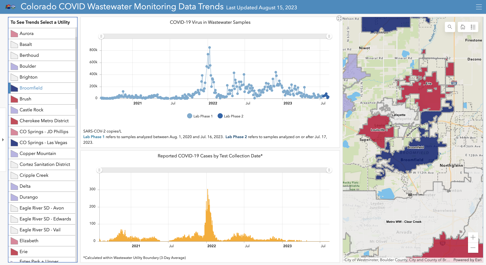
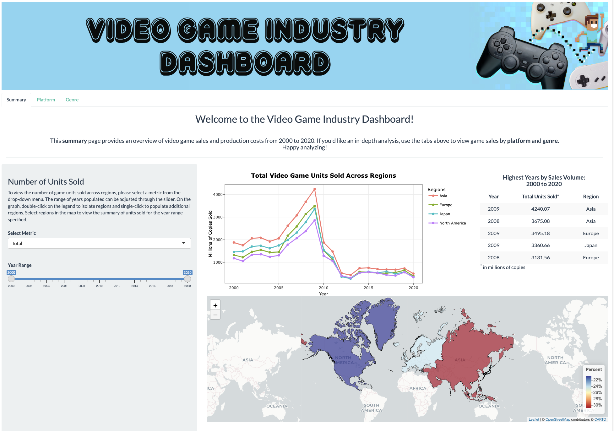
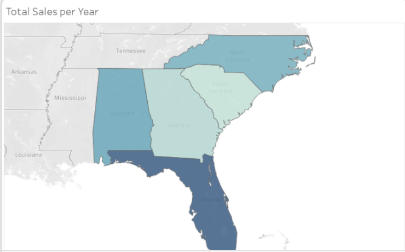
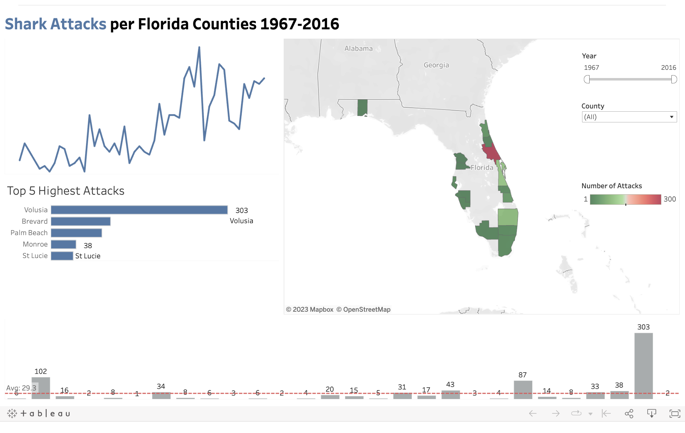
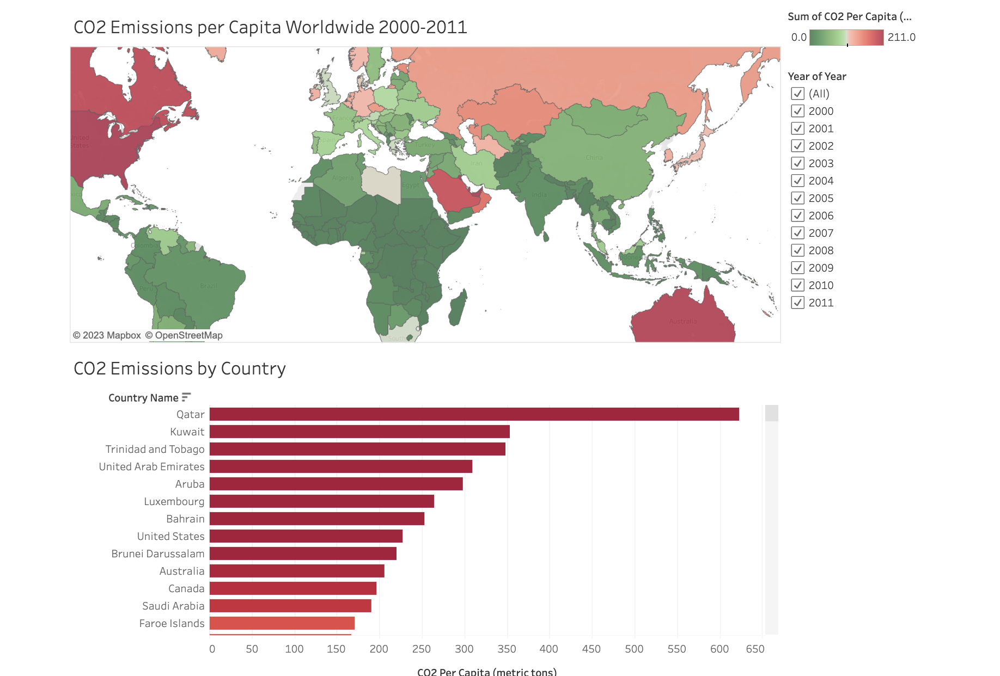
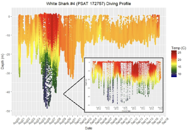

This page features a collection of projects I have worked on, both professionally and personally. These projects were built with a variety of tools and feature data sets of varying size and complexity. Click on a project below to learn more.

Type: Interactive Dashboard
Framework: ArcGIS, RStudio, SQL
Description: This dashboard is available to the public illustrating the wastewater surveillance lab results of participating wastewater utilities and syndromic case data in Colorado. Trends are analyzed using Bayesian Structural Time Series (BSTS) models and linear regression. This dashboard is updated twice weekly through a data pipeline in R and is published on the State of Colorado Department of Public Health and Environment website.
Type: Interactive Dashboard
Framework: RShiny, RStudio, SQL
Description: This is a replica of the internal dashboard I developed for the State of Colorado to visualize wastewater surveillance results for viewing by our internal partners. This dashboard uses mock data to demonstrate paired visualizations and time series analyses, including spatial geodatasets and heatmaps.

Type: Interactive Dashboard
Framework: RShiny, RMarkdown
Description: An interactive dashboard featuring pages and tabs to visualize an array of information relating to the gaming industry from 2000 to 2020. A documentation page (created using RMarkdown) is included walking the user through the code base. This dashboard is connected to google drive for easy data updates.

Type: Interactive Dashboard
Framework: Tableau, RStudio
Description: This dashboard uses mock data to visualize key performance indicators of sales representatives at an insurance agency spaning the southeast United States. This dashboard is connected to google drive for easy data updates.

Type: Interactive Dashboard
Framework: Tableau, SQL
Description: An interactive dashboard featuring a variety of visualization methods to easily comprehend large amounts of data from 1967 to 2016 pretaining to shark attacks in Florida. This time series is visualized using time sliders, heatmaps, line and bar graphs.

Type: Tableau Story
Framework: Tableau, SQL
Description: This story combines multiple dashboards to visualize two summaries of the same dataset. Data is visualized through heatmaps and plots connected through a slider used to select a range of time from 2000-2011.

Type: Presentation
Framework: Powerpoint, RStudio, ArcGIS
Description: This presentation summarizes the results of my published research on the habitat use and movement patterms of young white sharks in the Northwest Atlanic Ocean. Statistical data models were created using R, ArcGIS, and Excel for behavior analysis, including descriptive statistics, time
series analysis, linear regression, inferential statistics, spectral analysis, and post hoc testing.

Type: Conference Poster
Framework: Powerpoint, RStudio, ArcGIS
Description: This poster was created for the American Fisheries Society conference and showcases prelimary results of my study on the diving and migatory behavior patterns of young white sharks in the Northwest Atlantic Ocean.